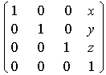

title: glTranslated function (Gl.h) description: The glTranslated function multiplies the current matrix by a translation matrix. ms.assetid: 9f066a92-ee78-44d1-b8f8-0eacde0e1a47 keywords:
The glTranslated function multiplies the current matrix by a translation matrix.
void WINAPI glTranslated(
GLdouble x,
GLdouble y,
GLdouble z
);
x
The x coordinate of a translation vector.
y
The y coordinate of a translation vector.
z
The z coordinate of a translation vector.
This function does not return a value.
The glTranslated function produces the translation specified by (x, y, z). The translation vector is used to compute a 4x4 translation matrix:

The current matrix (see glMatrixMode) is multiplied by this translation matrix, with the product replacing the current matrix. That is, if M is the current matrix and T is the translation matrix, then M is replaced with M T.
If the matrix mode is either GL_MODELVIEW or GL_PROJECTION, all objects drawn after glTranslated is called are translated. Use glPushMatrix and glPopMatrix to save and restore the untranslated coordinate system.
The following functions retrieve information related to glTranslated:
glGet with argument GL_MATRIX_MODE
glGet with argument GL_MODELVIEW_MATRIX
glGet with argument GL_PROJECTION_MATRIX
glGet with argument GL_TEXTURE_MATRIX
| Requirement | Value |
|---|---|
| Minimum supported client | Windows 2000 Professional [desktop apps only] |
| Minimum supported server | Windows 2000 Server [desktop apps only] |
| Header | Gl.h |
| Library | Opengl32.lib |
| DLL | Opengl32.dll |